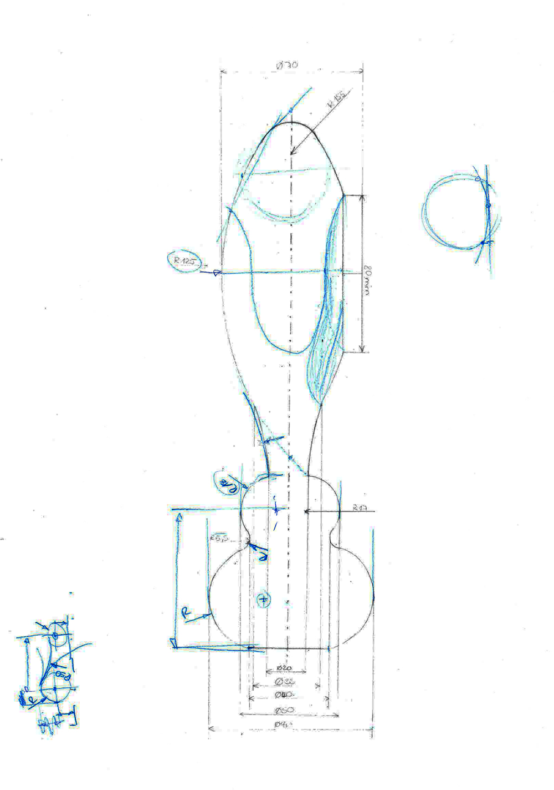
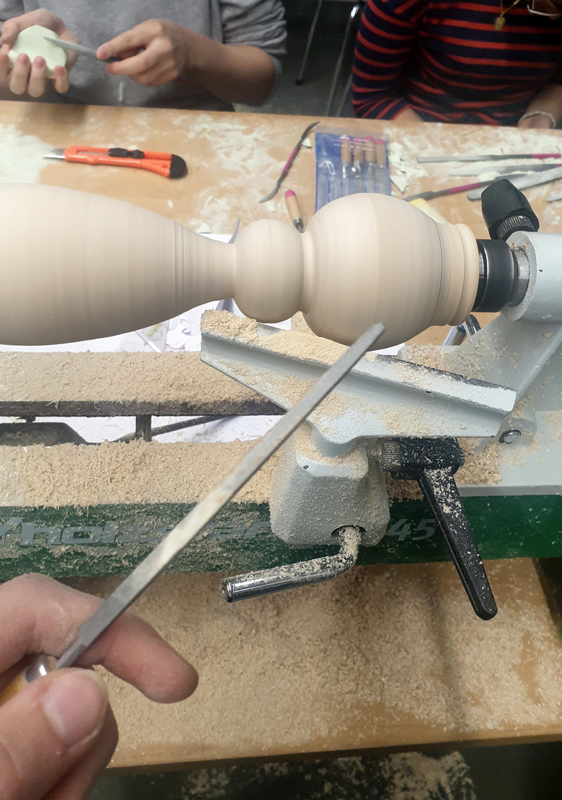
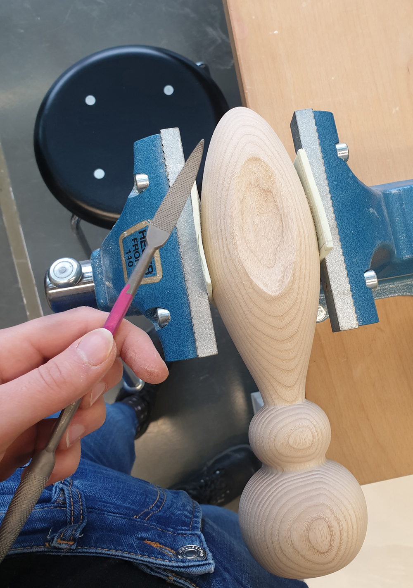
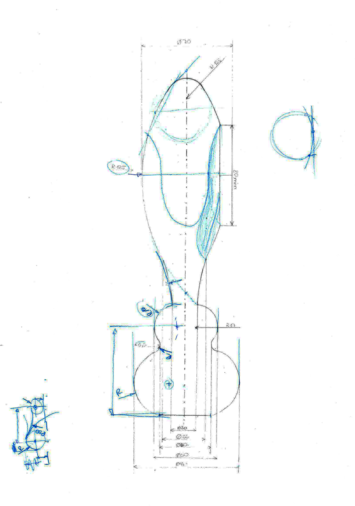
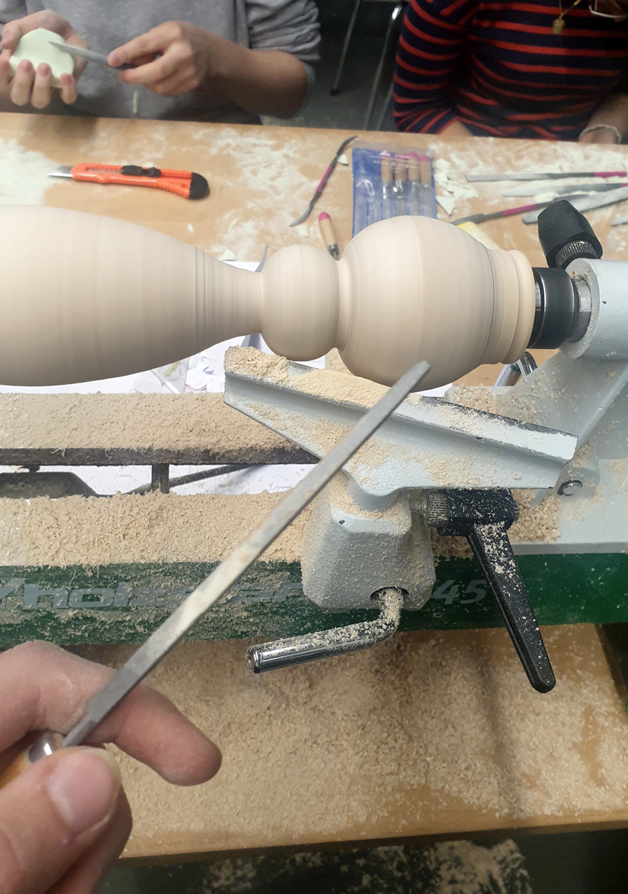
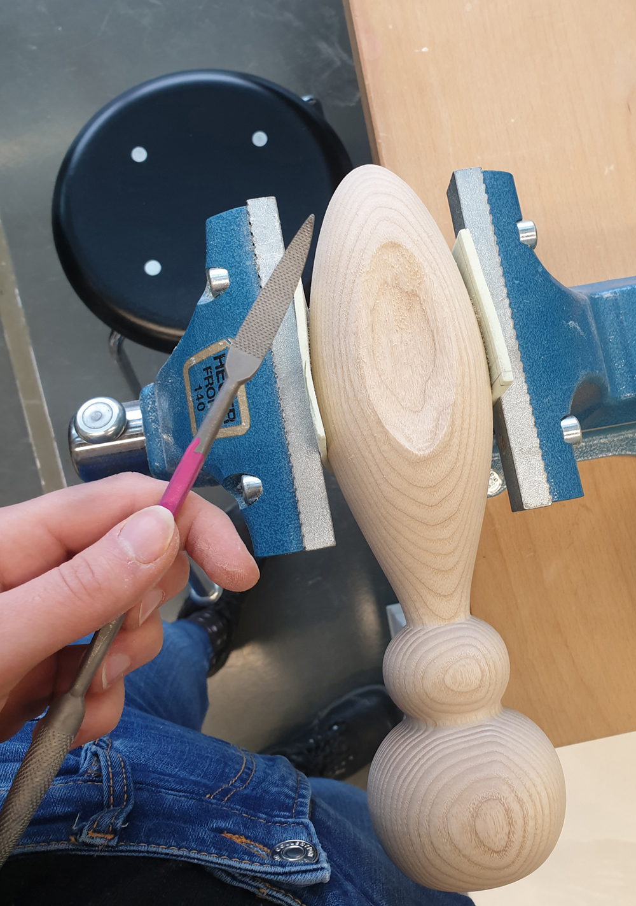

An der Drechselmaschine sollte ein Rotationskörper kreiert werden. Es wurden zuerst mit verschiedenen Ideefindungswege gearbeitet. Die unter- schiedlichen Entwürfe wurden immer mehr eingegrenzt und der finale Entwurf ausgearbeitet. Das Ergebnis sollte ein ästhetischer Rotationskörper sein.
Designprozess
 




